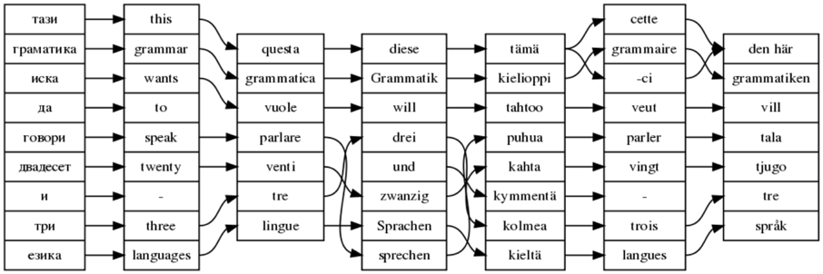

red=wanted, green=exists, yellow=in-progress, solid=official-eu, dotted=non-eu
GF Resource Grammar Library is an open-source computational grammar resource that currently covers 12 languages. The Summer School is a part of a collaborative effort to extend the library to all of the 23 official EU languages. Also other languages chosen by the participants can be covered.
The linguistic coverage of the library includes the inflectional morphology and basic syntax of each language. It can be used in GF applications and also ported to other formats. It can also be used for building other linguistic resources, such as morphological lexica and parsers. The library is licensed under LGPL.
In the summer school, each language will be implemented by one or two students working together. A morphology implementation will be credited as a Chalmers course worth 7.5 ETCS points; adding a syntax implementation will be worth more. The estimated total work load is 1-2 months for the morphology, and 3-6 months for the whole grammar.
Participation in the course is free. Registration is done via the courses's
Google group, groups.google.com/group/gf-resource-school-2009/. The registration deadline is 15 June 2009.
Some travel grants will be available. They are distributed on the basis of a GF programming contest in April and May.
The summer school will be held on 17-28 August 2009, at the campus of Chalmers University of Technology in Gothenburg, Sweden.

word alignment produced by GF from the resource grammar in English, Italian, Swedish, Finnish, French, and German
Since 2007, EU-27 has 23 official languages, listed in the diagram on top of this document. There is a growing need of linguistic resources for these languages, to help in tasks such as translation and information retrieval. These resources should be portable and freely accessible. Languages marked in red in the diagram are of particular interest for the summer school, since they are those on which the effort will be concentrated.
GF (Grammatical Framework,
digitalgrammars.com/gf)
is a functional programming language designed for writing natural
language grammars. It provides an efficient platform for this task, due to
its modern characteristics:
In addition to "ordinary" grammars for single languages, GF supports multilingual grammars. A multilingual GF grammar consists of an abstract syntax and a set of concrete syntaxes. An abstract syntax is system of trees, serving as a semantic model or an ontology. A concrete syntax is a mapping from abstract syntax trees to strings of a particular language.
These mappings defined in concrete syntax are reversible: they can be used both for generating strings from trees, and for parsing strings into trees. Combinations of generation and parsing can be used for translation, where the abstract syntax works as an interlingua. Thus GF has been used as a framework for building translation systems in several areas of application and large sets of languages.
The GF resource grammar library is a set of grammars usable as libraries when building translation systems and other applications. The library currently covers the 9 languages coloured in green in the diagram above; in addition, Catalan, Norwegian, and Russian are covered, and there is ongoing work on Arabic, Hindi/Urdu, Polish, Romanian, and Thai.
The purpose of the resource grammar library is to define the "low-level" structure of a language: inflection, word order, agreement. This structure belongs to what linguists call morphology and syntax. It can be very complex and requires a lot of knowledge. Yet, when translating from one language to another, knowing morphology and syntax is but a part of what is needed. The translator (whether human or machine) must understand the meaning of what is translated, and must also know the idiomatic way to express the meaning in the target language. This knowledge can be very domain-dependent and requires in general an expert in the field to reach high quality: a mathematician in the field of mathematics, a meteorologist in the field of weather reports, etc.
The problem is to find a person who is an expert in both the domain of translation and in the low-level linguistic details. It is the rareness of this combination that has made it difficult to build interlingua-based translation systems. The GF resource grammar library has the mission of helping in this task. It encapsulates the low-level linguistics in program modules accessed through easy-to-use interfaces. Experts on different domains can build translation systems by using the library, without knowing low-level linguistics. The idea is much the same as when a programmer builds a graphical user interface (GUI) from high-level elements such as buttons and menus, without having to care about pixels or geometrical forms.
In addition to translation, the library is also useful in localization, that is, porting a piece of software to new languages. The GF resource grammar library has been used in three major projects that need interlingua-based translation or localization of systems to new languages:
http://www.key-project.org/,
for writing formal and informal software specifications (3 languages)
http://webalt.math.helsinki.fi/content/index_eng.html,
for translating mathematical exercises to 7 languages
http://www.talk-project.org,
where the library was used for localizing spoken dialogue systems
to six languages
The library is also a generic linguistic resource, which can be used for tasks such as language teaching and information retrieval. The liberal license (LGPL) makes it usable for anyone and for any task. GF also has tools supporting the use of grammars in programs written in other programming languages: C, C++, Haskell, Java, JavaScript, and Prolog. In connection with the TALK project, support has also been developed for translating GF grammars to language models used in speech recognition (GSL/Nuance, HTK/ATK, SRGS, JSGF).
The library has the following main parts:
The goal of the summer school is to implement, for each language, at least the first three components. The latter three are more open-ended in character.
The goal of the summer school is to extend the GF resource grammar library to covering all 23 EU languages, which means we need 15 new languages. We also welcome other languages than these 23, if there are interested participants.
The amount of work and skill is between a Master's thesis and a PhD thesis. The Russian implementation was made by Janna Khegai as a part of her PhD thesis; the thesis contains other material, too. The Arabic implementation was started by Ali El Dada in his Master's thesis, but the thesis does not cover the whole API. The realistic amount of work is somewhere between 3 and 8 person months, but this is very much language-dependent. Dutch, for instance, can profit from previous implementations of German and Scandinavian languages, and will probably require less work. Latvian and Lithuanian are the first languages of the Baltic family and will probably require more work.
In any case, the proposed allocation of work power is 2 participants per language. They will do 2 months' worth of home work, followed by 2 weeks of summer school, followed by 4 months work at home. Who are these participants?
Persons interested to participate in the Summer School should sign up in the Google Group of the course,
groups.google.com/group/gf-resource-school-2009/
The registration deadline is 15 June 2009.
The participants are recommended to learn GF in advance, by self-study from the tutorial. This should take a couple of weeks. An on-line course will be arranged in April to help in getting started with GF.
After the on-line course, a programming assignment will be published. This assignment will test skills required in resource grammar programming. Work on the assignment will take a couple of weeks. Those who are interested in getting a travel grant will submit their sample resource grammar fragment to the Summer School Committee by 12 May. The Committee then decides who is given a travel grant of up to 1000 EUR.
The summer school itself is devoted for working on resource grammars. In addition to grammar writing itself, testing and evaluation is performed. One way to do this is via adding new languages to resource grammar applications - in particular, to the WebALT mathematical exercise translator.
The resource grammars are expected to be completed by December 2009. They will be published at GF website and licensed under LGPL.
The participants are encouraged to contact each other and even work in groups.
Writing a resource grammar implementation requires good general programming skills, and a good explicit knowledge of the grammar of the target language. A typical participant could be
But it is the quality of the assignment that is assessed, not any formal requirements. The "typical participant" was described to give an idea of who is likely to succeed in this.
The summer school is free of charge.
Some travel grants are given, on the basis of a programming contest, to cover travel and accommodation costs up to 1000 EUR per person.
The number of grants will be decided during Spring 2009, and the grand holders will be notified before the beginning of June.
Special terms will apply to students in GSLT and NGSLT.
A list of teachers will be published here later. Some of the local teachers probably involved are the following:
More teachers are welcome! If you are interested, please contact us so that we can discuss your involvement and travel arrangements.
In addition to teachers, we will look for consultants who can help to assess the results for each language. Please contact us!
This committee consists of a number of teachers and informants, who will select the participants. It will be selected by April 2009.
The summer school will be organized at the campus of Chalmers University of Technology in Gothenburg, Sweden, on 17-28 August 2009.
Time schedule:
The new resource grammars will be released under the LGPL just like the current resource grammars, with the copyright held by respective authors.
The grammars will be distributed via the GF web site.
Seven reasons:
Håkan Burden: burden at chalmers se
Aarne Ranta: aarne at chalmers se
K. Angelov. Type-Theoretical Bulgarian Grammar. In B. Nordström and A. Ranta (eds), Advances in Natural Language Processing (GoTAL 2008), LNCS/LNAI 5221, Springer, 2008.
A. El Dada and A. Ranta. Implementing an Open Source Arabic Resource Grammar in GF. In M. Mughazy (ed), Perspectives on Arabic Linguistics XX. Papers from the Twentieth Annual Symposium on Arabic Linguistics, Kalamazoo, March 26 John Benjamins Publishing Company. 2007.
A. El Dada. Implementation of the Arabic Numerals and their Syntax in GF. Computational Approaches to Semitic Languages: Common Issues and Resources, ACL-2007 Workshop, June 28, 2007, Prague. 2007.
H. Hammarström and A. Ranta. Cardinal Numerals Revisited in GF. Workshop on Numerals in the World's Languages. Dept. of Linguistics Max Planck Institute for Evolutionary Anthropology, Leipzig, 2004.
M. Humayoun, H. Hammarström, and A. Ranta. Urdu Morphology, Orthography and Lexicon Extraction. CAASL-2: The Second Workshop on Computational Approaches to Arabic Script-based Languages, July 21-22, 2007, LSA 2007 Linguistic Institute, Stanford University. 2007.
J Khegai. GF parallel resource grammars and Russian. In proceedings of ACL2006 (The joint conference of the International Committee on Computational Linguistics and the Association for Computational Linguistics) (pp. 475-482), Sydney, Australia, July 2006.
J. Khegai. Language engineering in Grammatical Framework (GF). Phd thesis, Computer Science, Chalmers University of Technology, 2006.
W. Ng'ang'a. Multilingual content development for eLearning in Africa. eLearning Africa: 1st Pan-African Conference on ICT for Development, Education and Training. 24-26 May 2006, Addis Ababa, Ethiopia. 2006.
N. Perera and A. Ranta. Dialogue System Localization with the GF Resource Grammar Library. SPEECHGRAM 2007: ACL Workshop on Grammar-Based Approaches to Spoken Language Processing, June 29, 2007, Prague. 2007.
A. Ranta. Modular Grammar Engineering in GF. Research on Language and Computation, 5:133-158, 2007.
A. Ranta. How predictable is Finnish morphology? An experiment on lexicon construction. In J. Nivre, M. Dahllöf and B. Megyesi (eds), Resourceful Language Technology: Festschrift in Honor of Anna Sågvall Hein, University of Uppsala, 2008.